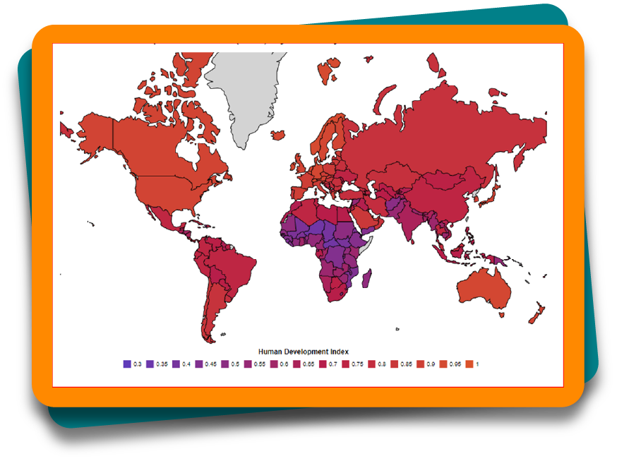

As principais violações que as mulheres ainda sofrem ao redor do mundo são abordadas em uma reportagem na revista Veja. Apesar de muitos anos de luta e algumas conquistas alcançadas, como o direito ao voto, há muitos países que impõem direitos mínimos, por exemplo, não poder ir e vir sozinha nas ruas. Conforme a matéria:
Figura 1 – Mulheres afegãs com seus filhos em prisão
Fonte: Araújo (2011)
Figura 1 – Mulheres afegãs com seus filhos em prisão
Fonte: Araújo (2011)
Fotografia de três mulheres afegãs e uma criança em uma sala. Todas as mulheres estão vestindo uma burca, em que o corpo é coberto por uma espécie de véu. Uma das mulheres está em primeiro plano, à direita da imagem, usando uma burca preta, com apenas os olhos à mostra no seu rosto.
No histórico desrespeito pelos direitos humanos em todo o mundo, as principais vítimas ainda são mulheres – de várias idades, raças e nacionalidades – apesar dos inegáveis avanços conquistados e de sua crescente participação política e econômica. São elas as que mais sofrem com problemas como mortalidade materna, violência doméstica, escravidão moderna, tráfico de pessoas, prostituição, turismo sexual, estupro, mutilação genital, casamento forçado e precoce, falsa igualdade política e profissional (ARAÚJO, Veja, 2011).
Na primeira etapa de Ciências Humanas e Sociais Aplicadas, você estudou alguns conceitos para entender a diversidade das populações no mundo, como diversidade cultural, diferenças étnicas, diferenças religiosas, entre outros. Além disso, foi possível compreender que, quando um país, uma população ou uma pessoa não respeitam essas diversidades, pode-se estar diante de preconceitos, como xenofobia, racismo etc.
Outro tema importante estudado até aqui foi a violação dos direitos das mulheres no Brasil no contexto da pandemia de covid-19 e da violência doméstica. Temas ligados aos direitos humanos, mais especificamente das mulheres, são essenciais para iniciar este tópico, pois, conforme esses estudos, serão analisadas as violações das mulheres no mundo.
Serão destacados também outros temas essenciais ao entendimento do atual cenário de participação das mulheres no mundo, como em setores da política e da educação, além de aspectos socioeconômicos.
Para isso, este estudo partirá de um ponto de localização no globo terrestre que está sendo utilizado nesse contexto, o Oriente Médio. Você fará uma viagem para uma localidade bem distante do Brasil, com cultura, regras, leis e realidade social muito distintas de grande parte da população do mundo.
Veja, a seguir, algumas características essenciais para entender o contexto que está sendo abordado.
A Ásia é o maior continente do mundo, tanto por sua extensão territorial quanto por sua população absoluta . É composta por 50 países, tendo uma vasta diversidade cultural, étnica e religiosa. É comum pensar que esse continente é único, que os asiáticos são todos parecidos, com características físicas em comum, como os olhos e a cor de pele, que comem comidas exóticas , como insetos, que todos os indivíduos seguem a mesma religião e tem avanço tecnológico muito superior ao do Brasil.
Entretanto, assim como na América, esse continente tem características bem específicas, conforme o país ou a região analisada. É necessário visualizar esses países para entender um pouco mais sobre a região estudada neste tópico.
No mapa a seguir, é possível visualizar o continente asiático e seus países: Afeganistão, Arábia Saudita, Armênia, Azerbaijão, Cazaquistão, Catar, China, Coreia do Norte, Coreia do Sul, Emirados Árabes, Filipinas, Geórgia, Iêmen, Índia, Indonésia, Irã, Iraque, Israel, Japão, Jordânia, Líbano, Malásia, Mongólia, Nepal, Paquistão, Rússia, Síria, Sri Lanka, Tajiquistão, Tailândia, Turquia, Vietnã e uma parte do Egito.
Figura 2 – Mapa-múndi com destaque para o continente asiático
Fonte: Mendão (s.d.)
Ilustração de parte do mapa do mundo, com destaque colorido para os países que fazem parte do continente asiático, como Rússia, Cazaquistão, Mongólia, China, Índia, Arabia Saudita, Turquia, Irã, Indonésia, Malásia, Filipinas, Indonésia, Irã, Iraque, Israel, Japão, Jordânia, Líbano e Nepal.
Dessa forma, será estudada a localização do Oriente Médio no continente asiático, visto que este módulo foi iniciado com a violação dos direitos das mulheres no mundo, principalmente em países do Oriente Médio, que figuram como os maiores violadores desses direitos.
O Oriente Médio recebe esse nome por sua localização estratégica, entre o continente africano e o europeu, dividindo o mundo entre o oriente e o ocidente . Os países que estão nessa região são: Afeganistão, Arábia Saudita, Barein, Catar, Emirados Árabes Unidos, Egito, Iêmen, Irã, Iraque, Israel, Jordânia, Kuwait, Líbano, Omã, Síria e Turquia. Clique sobre o mapa a seguir e veja essa região do globo terrestre.

Figura 3 – Mapa do Oriente Médio
Fonte: Toda Matéria (c2011-2022)
Ilustração de um mapa com parte da África, Ásia e Europa, com destaque colorido para os países que formam o Oriente Médio, como Arábia Saudida, Afeganistão, Irã, Iêmen, Jordânia, Turquia, entre outros.
A diversidade étnica , religiosa e política é muito presente no Oriente Médio. Os grupos étnicos são formados principalmente por turcos, persas, hebreus, árabes e curdos . Dessas etnias, os árabes têm a maior população absoluta e ocupam a maior área, com uma cultura independente de religião, podendo ser muçulmanos, cristãos, judeus etc.
No mapa, a seguir, alguns países estão com territórios coloridos. Estes se localizam em uma região entre o Oriente Médio, na Ásia, e a África, principalmente na parte norte do continente. Todos que estão em destaque têm, em sua maioria, povos árabes, compondo o mundo árabe. Clique aqui e veja os países que são predominantemente árabes.

Figura 4 – Países com população formada por maioria árabe
Fonte: Bezerra (c2011-2022)
Ilustração de um mapa com parte da África, Ásia e Europa, com destaque colorido para os países que formam o Oriente Médio, como Arábia Saudida, Afeganistão, Irã, Iêmen, Jordânia, Turquia, entre outros.
Árabes e mulçumanos são dois grupos distintos. Os mulçumanos são vinculados à religião Islã, e os árabes são um grupo étnico. Veja, a seguir, uma breve explicação sobre essa religião, conforme o site Observatório, da Unicap.

O islamismo tem a sua origem derivada da palavra islã que na língua árabe significa submissão, obediência. A religião islâmica consequentemente é uma das poucas religiões que não traz na origem do seu nome, o do seu fundador ou do lugar de origem do povo que a professa. Diferentemente do cristianismo, budismo, zoroastrismo que trazem a marca do seu fundador no nome da crença (Jesus Cristo, Buda, Zoroastro), ou o nome da tribo de origem no caso do Judaísmo (tribo de judá), o islamismo goza da particularidade de não estar associada a nenhum homem ou povo em particular. Segundo os muçulmanos, a palavra islã não implica relação desta natureza porque não é propriedade de nenhuma pessoa, nem nenhum povo ou país em particular (MUÇULMANOS, s.d.).
Uma característica desse território é que, em alguns países, existe uma junção de política com religião, quando um grupo étnico sobrepõe suas ideologias religiosas perante as leis e o regime de seu país. Nesses casos, tem-se um estado fundamentalista, com as regras e as normas estabelecidas, nesses países, vinculadas às regras religiosas. Sua Constituição Federal é uma fusão de códigos religiosos com regras sociais e políticas, formando as leis da sociedade.
Um exemplo de estado fundamentalista é o grupo extremista que comanda o Afeganistão, o Talibã , que tem regras severas, principalmente em relação às mulheres, como a utilização da burca (uma vestimenta que cobre as mulheres da cabeça aos pés, deixando somente os olhos à mostra).
No tópico a seguir, você verá como o Oriente Médio trata questões relacionadas aos direitos humanos, ao acordo internacional estabelecido pela ONU e como vivem as mulheres dessa região. Dessa forma, será aprofundado o fenômeno social iniciado neste módulo, sobre a violação dos direitos das mulheres no mundo, trazendo você, estudante, para uma reflexão sobre o Brasil também.

Estudante, na primeira etapa de Ciências Humanas e Sociais Aplicadas, um dos objetivos foi entender como se estabeleceu no mundo o acordo sobre os direitos humanos universais. Esses direitos foram instituídos pela Organização das Nações Unidas (ONU), com o objetivo de respeitar e zelar pelos direitos básicos das nações.
Em uma das conferências realizadas pela ONU, no ano de 2010, na cidade de Nova Iorque, foi estabelecida a ONU Mulheres, com os objetivos de garantir, unir, fortalecer e defender os direitos básicos das mulheres no mundo. Dessa forma, a ONU firma os seguintes 12 direitos das mulheres.
Esses direitos são acordos estabelecidos entre os países nas conferências que ocorrem anualmente. Mas, como citado na reportagem do início deste módulo, há países que ainda não garantem esses direitos e que, até mesmo, não assinam os acordos estabelecidos. A região do Oriente Médio está no ranking dos piores países do mundo para mulheres, conforme o índice de igualdade de direitos e o índice de violência contra a mulher, segundo dados da ONU. No topo da lista, estão os seguintes países, divulgados pelo site de notícias G1: Afeganistão, Síria, Iêmen, Paquistão e Iraque. A lista tem um ranking com 10 países com elevado índice de injustiças e falta de direitos, assim como 10 países com igualdade de gênero. O Brasil está na 80º (octogésima) posição dos países com igualdade de gênero, no topo da lista de igualdade, estão a Noruega, a Finlândia e a Islândia.
Esse estudo mostra que, apesar de todos os esforços mundiais para garantir o mínimo de direitos, ainda há culturas e regiões do mundo onde a realidade para as mulheres está longe de ser igualitária. Existem mulheres que sofrem mutilações genitais, risco de morte durante as gestações, risco ao andar sozinha pelas ruas, violência doméstica, imposições de religião e política.
Entretanto, há diversas mulheres que lutam por esses direitos, que são negados ao longo da história. Conheça, a seguir, duas personagens importantes nessa luta, suas histórias e por quais direitos lutam, clicando sobre os cards.
Após conhecer essas duas importantes mulheres na jornada pela igualdade de gênero, sabe-se que muitas conquistas ocorreram devido a lutas femininas ao redor do mundo. Isso se deu pela participação e efetivação das mulheres na política e na sociedade como um todo. Quando há representantes femininas, com uma participação ativa desse grupo na luta por igualdade, as chances de leis e mudanças sociais e culturais ocorrerem é maior.
Outro exemplo da importância da participação das mulheres no mundo se materializou no âmbito público, no ano 1893, na Nova Zelândia, quando ocorreu a participação das mulheres no voto. Já no Brasil foi somente a partir de 1932 que as mulheres começaram a ter esse direito.
Em relação à luta pelos direitos das mulheres, é necessário compreender que estão sendo abordados direitos universais. Isso significa que, em muitas regiões do mundo, como no Brasil, existe uma diversidade cultural e realidades distintas. Mas quando são abordados os direitos femininos, há semelhanças, como a violação de direitos ou a falta desses.
A seguir, as imagens demonstram essas diversidades, seja no Brasil, com etnias diversas, como as mulheres indígenas, que há pouco tempo começaram a participar da política, seja no Oriente Médio, onde as mulheres têm vestimentas típicas e representações culturais. Clique ou toque nas setas para visualizá-las.
Neste tópico, você estudou sociedades e culturas que estão distantes do Brasil no globo, como o Oriente Médio, porém, mesmo tão distante, com religiões e etnias diversas, podem ter semelhanças no cotidiano. Principalmente quando são abordados assuntos como os direitos individuais das mulheres, pois, ao viajar para outros continentes, é possível encontrar semelhanças na luta das mulheres por direitos, como participação política, fim da violência física e emocional, entre tantas outras questões em comum.
Dica! Caso você tenha interesse em assistir a um documentário filmado na Ásia sobre os direitos das mulheres a condições básicas de saúde e higiene e como elas se organizaram para conquistar esses direitos, acesse as plataformas de vídeos on-line e procure pelo título “Absorvendo tabu”. Na internet, você também poderá encontrar diversas entrevistas da Malala Yousafzai, seu discurso na ONU, breves documentários sobre sua vida etc. Também é possível encontrar diversos filmes e documentários que abordam a temática dos conflitos e guerras na região do Oriente Médio.
Nos tópicos a seguir, você estudará como a formação da política e o surgimento dos poderes se relacionam e podem percorrer os direitos mínimos alcançados pelas mulheres. Afinal, é importante entender que, mesmo no campo da política, em que as mulheres foram excluídas e proibidas de participar, a presença delas ao longo da história continua sendo fundamental para que sigam buscando uma sociedade igualitária e justa.
Estudante, até o momento, você pôde perceber que os direitos das mulheres se diferenciam conforme seu espaço e cultura. Nos assuntos abordados no tópico anterior, em relação aos direitos das mulheres, estão muito presentes as questões políticas. Mas você sabe o que realmente significa política? Este tópico partirá da origem desse conceito, para que assim seja possível compreender melhor esse tema, bem como sua relevância para uma sociedade mais justa e igualitária.
A palavra “política” é muito usada na sociedade, fazendo com que seu significado e seu propósito sejam atribuídos conforme os acontecimentos presenciados no cotidiano, ou seja, o que se vê na prática. Por isso, em muitos casos, a palavra “política” recebe um significado negativo e faz com que as pessoas queiram saber menos sobre ela e afirmem coisas do tipo “Não me envolvo com política!”; “Eu não gosto de política!”; “Na política, só tem corruptos!”; “A política não ajuda ninguém.” etc. A seguir, veja uma tirinha, do cartunista argentino Quino, retratando essa ideia negativa que se tem da política.

A personagem Mafalda se refere à palavra política como “palavrão”, que significa uma palavra grosseira ou obscena. Mas será que, de fato, a política é algo desagradável? Como dito anteriormente, os fatos na sociedade e no mundo envolvendo política não são todos satisfatórios, e isso gera uma ideia negativa nas pessoas, de querer se afastar de algo que não consideram bom e efetivo.

A política faz parte das relações humanas, em como a sociedade é formada e organizada, afetando tanto o coletivo como o individual. Está presente no dia a dia e não tem a ver somente com voto e cargos políticos (governadores, prefeitos, vereadores, deputados etc.). Não é um assunto que se restrinja a políticos e especialistas ou discursos, debates e eleições, mas abrange todos os cidadãos que compõem a sociedade.
As relações sociais são carregadas de política, seja no campo familiar, profissional ou educacional. A interação entre as pessoas, os relacionamentos, as tomadas de decisão, os acordos e as combinações dentro de um espaço compartilhado exigem política. É somente com a política que se pode conviver de forma harmônica, pois ela media conflitos.
Quando você conversa com seus colegas de turma sobre melhorias nas aulas e na sala de aula, em relação à limpeza, ao silêncio, por exemplo, está fazendo política também. Quando você articula e se reúne com moradores do seu bairro ou rua para melhorias no local, está fazendo política. Até mesmo quando você decide não participar de política, está fazendo política, pois está tomando uma decisão que envolve a sua vida e as demais.
Atualmente, a política compreendida decorre da interpretação sobre o que é visto em situações e contextos políticos na sociedade e no mundo. Esses fatos, que mais marcam a população, advêm da distorção do que seja a política, limitando-a a cargos e partidos políticos. Entretanto, política vai muito além disso e faz parte da existência humana. Os seres humanos necessitam de política para viver. Quer ver? Observe a animação a seguir.

Essa frase foi dita por Aristóteles, um filósofo nascido na Grécia antiga, há mais de 300 a.C. Quando ele afirmou isso, quis mostrar que o homem é um ser que necessita dos outros e busca viver em comunidade para se sentir completo. Ou seja, a política é algo naturalmente humano, ela só existe porque os seres humanos existem. Assim, é possível dizer que o nascimento da política se deu com o nascimento dos seres humanos e quando estes começaram a se relacionar. Ao longo do tempo, em diversos lugares do mundo, os seres humanos foram se desenvolvendo e aprimorando seu convívio.
Assim, a política está atrelada ao espaço público, à organização da cidade e ao bem comum dos cidadãos. Ser político, na Grécia antiga, representava alguém que se dedicava ao governo da polis (cidade), tendo maior preocupação com o interesse coletivo.

Na Grécia antiga, a formação política ocorreu quando houve a necessidade da criação de um sistema de organização das cidades-Estados, que eram controladas pela elite aristotélica oligárquica, conhecidas como eupátridas, que tinham todo o poder político e econômico da polis. Com o aparecimento de outras classes sociais (artesãos, comerciantes, pequenos proprietários de terra etc.), o cenário mudou, pois como essas classes contribuíam para a economia da polis, queriam ter participação nas decisões políticas. A partir disso, a democracia se instaurou em Atenas, uma forma de governo em que todos os cidadãos participavam diretamente das decisões da polis.
As assembleias e os debates sobre a polis aconteciam em praças públicas, mais conhecidas como ágoras. Além das discussões e assembleias realizadas nas ágoras, também ocorriam cerimônias religiosas, negociações econômicas, comércio de mercadorias, entre outros.
A seguir, a imagem mostra a ágora e o Templo de Hefesto, ao fundo, nos dias de hoje.

Esse é um espaço que também marca o nascimento da democracia, pois contava com a participação de todos os cidadãos nas tomadas de decisões da cidade. Porém, é importante destacar que nem todas as pessoas eram consideradas cidadãs, apenas uma pequena parcela da população. Por exemplo, as mulheres, os escravos e os metecos (estrangeiros) não eram considerados cidadãos, ficando de fora de toda e qualquer decisão política.
Para ser considerada uma cidadã, a pessoa deveria ser nascida em Atenas, tendo pai e mãe também atenienses. Teria que ser homem, maior de 18 anos e livre, ou seja, sem condição de escravo. Dessa forma, somente poucos cidadãos estariam aptos ao exercício político. Veja essa divisão com mais clareza na ilustração a seguir.
Nota-se que, mesmo com a criação da democracia, que visava à participação de todos, alguns grupos de pessoas continuaram de fora, sendo as mulheres parte dessa exclusão. Pode-se perceber que, desde muito tempo atrás, cerca de 300 a.C., as mulheres não eram incluídas na vida pública nem consideradas cidadãs da cidade, ficando reclusas em espaços privados. Essa visão reflete nos dias atuais, gerando consequências até hoje. Por exemplo, atualmente, a participação das mulheres na política ainda é baixa comparada com a participação dos homens, o que será visto com mais detalhes no próximo tópico.
Isso tudo também reflete nos direitos gerais das mulheres, pois não é à toa que ainda se encontram mulheres lutando pelo direito de estudar, como é o caso mostrado no Oriente Médio. Apesar disso, não se pode desconsiderar que a democracia ateniense, além de ter sido um avanço naquele período, serviu de modelo e inspiração para as demais épocas no mundo todo.
Desse modo, a democracia ateniense foi reproduzida por diversas sociedades antigas e tem influência até hoje nos governos que adotam esse sistema. O Brasil, por exemplo, tem a democracia como modelo político, mas não é um modelo idêntico àquele criado em Atenas. O modelo ateniense era o da democracia direta, já o modelo adotado pelos brasileiros é o da democracia representativa ou indireta. Esse modelo não é só adotado pelo Brasil, muitos outros países também seguem a democracia representativa, como é o caso da Argentina, Canadá, Estados Unidos, Noruega, Portugal, França, entre outros. Veja o esquema que mostra a diferença entre esses dois modelos de democracia, clicando sobre os cards.


Ao conhecer a origem dos fatos e sua história, é possível compreender melhor o presente, como é o caso da vida em sociedade, dos direitos das mulheres e da importância da política. Você deve ter notado que a visão sobre a política hoje em dia não é a mesma que na Grécia antiga. Se hoje as mulheres, em muitos países, podem participar das eleições, seja como candidatas ou simplesmente escolhendo seus representantes, por meio do voto, é devido à luta por esse direito, é uma conquista adquirida por elas.
No século XIX, houve um movimento de mulheres, que reivindicou seu direito ao voto, um direito que era dado só aos homens. Essas mulheres foram chamadas de sufragistas. Esse termo deriva da palavra “sufrágio”, que significa “voto”. Então, como o foco principal dessas mulheres estava no direito ao voto, foram chamadas assim. Elas acreditavam que, por meio do voto, a situação de desigualdade entre homens e mulheres teria fim, porque passariam a participar da política criando regras e leis que até então eram feitas apenas pelos homens, sem considerar a outra metade da humanidade, no caso, as mulheres.
Para saber mais sobre essas primeiras mulheres ativistas que iniciaram um movimento em defesa do voto feminino, no século XIX, no Reino Unido, assista ao filme As Sufragistas, de 2015.

O sufrágio feminino foi sendo conquistado aos poucos, se espalhando pelo mundo. A Arábia Saudita foi o último país, em 2015, a permitir que as mulheres participassem do voto, como comentado no início deste módulo. Por mais que a conquista do voto feminino tenha sido alcançada, com a intenção de estabelecer a igualdade, ainda existem desigualdades entre os sexos.
Há muitos direitos sendo violados até hoje, o direito ao voto não deu às mulheres o reconhecimento devido, de serem vistas e consideradas como seres aptos ao exercício público e não inferiores em relação aos homens. Ou seja, criar uma lei que permita a participação feminina nas eleições não significa que, na prática, isso aconteça. A solução da desigualdade entre homens e mulheres está muito além do voto, este foi somente o pontapé inicial dessa revolução por direitos iguais.
Você sabe como aconteceu a conquista do voto feminino no Brasil? O movimento sufragista brasileiro teve como líder a professora e indigenista Leolinda de Figueiredo Daltro, que fundou, em 1910, o Partido Republicano Feminino, primeira associação feminina, na cidade do Rio de Janeiro, capital do país à época. Essa sufragista ganhou notoriedade por reivindicar os direitos não só das mulheres, mas também dos indígenas. Ela teve um papel fundamental na emancipação do voto feminino, pois levantou esse debate na sociedade brasileira, contribuindo para o avanço da conquista do sufrágio feminino no país.
Após todo esse movimento de mulheres pelo direito ao voto, somente em 24 de fevereiro de 1932, que, no Brasil, o voto feminino foi assegurado, com o Decreto nº 21.076. Do início do movimento sufragista brasileiro até a conquista do reconhecimento do voto feminino, houve uma luta árdua e longa, levando mais de 20 anos para ser concretizada.
No ano de 1934, o voto feminino foi garantido e incorporado à Constituição Federal, permanecendo facultativo, ou seja, as mulheres não eram obrigadas a votar. Somente após o ano de 1965 é que o voto das mulheres se equiparou ao dos homens, tornando-se obrigatório também.
Antes do decreto de 1932, segundo registros históricos, existiu uma eleitora brasileira considerada a pioneira no voto feminino no Brasil e na América Latina. Essa mulher foi a professora Celina Guimarães Viana (1890-1972), nascida em Natal, no Rio Grande do Norte. Quando obteve o direito de votar, ela morava no município de Mossoró. Naquela época, os estados brasileiros tinham autonomia, e seu estado, o Rio Grande do Norte, criou a Lei Estadual nº 660/1927, que não fazia distinção entre os sexos. Celina requereu sua inclusão na lista de eleitores, e, em 25 de novembro de 1927, ela passou a ter direito ao voto.

Você pôde perceber que os direitos se modificaram com o tempo e que, ao longo da história, muitos deles foram sendo conquistados pelas mulheres. Mas o que possibilitou essas conquistas? A possibilidade dessas conquistas se deu por meio da política, mostrando sua importância na vida das pessoas e organizando a sociedade de modo que todos sejam incluídos e respeitados em seus direitos.
Para compreender melhor todas essas mudanças ao longo dos anos, é importante conhecer as formas de governo, que também influenciaram e influenciam os direitos e os deveres de cada cidadão. Por isso, no tópico a seguir, serão apresentadas algumas formas de governo, assim como a evolução da participação das mulheres na política. É necessário analisar toda a evolução dos direitos e suas formas de governo para entender os motivos pelos quais ainda há violação de direitos femininos pelo mundo.
Você já parou para pensar sobre a representatividade da mulher na política ao longo da história? Desde os primeiros governos existentes no planeta, há cerca de 7000 mil anos, na região do Oriente Médio, na Ásia, até os dias atuais, a participação feminina é um grande desafio, no Brasil e no mundo, pois ela é muito inferior ao necessário e justo.
Os governos surgiram diante da necessidade de povos estabelecerem regras, ordens e condições que possibilitassem o desenvolvimento social e econômico de suas civilizações5. Ou seja, a existência de governos é tão importante quanto antiga. No entanto, desde sempre, a presença da mulher nas organizações políticas é muito desigual e desproporcional em comparação com os homens. Antes de seguir nessa reflexão, serão analisados como são e quais são os principais tipos de governo que existem. Clique nos botões a seguir e veja as principais modalidades de governo de países existentes atualmente.
Regime político geralmente encontrado em repúblicas onde quem governa é o presidente eleito pelo povo, de forma democrática, para um mandato (período estabelecido por uma constituição).
Sistema de governo em que as decisões políticas são tomadas por um grupo de ministros liderados por um representante, chamado de primeiro-ministro.
Forma de governo em que um rei ou rainha recebe o poder de forma hereditária (passada dos pais para os filhos) para comandar de maneira vitalícia, com plenos poderes políticos (monarquia autoritária) ou dividindo-os com demais parlamentares, como ministros (monarquia parlamentarista).
Governo autoritário exercido por uma pessoa, um grupo político ou de militares, sem democracia e liberdade de expressão, com abuso de poder configurando o autoritarismo, por um período indeterminado.
A primeira mulher a exercer um cargo de chefia política no país pelo voto foi Alzira Soriano , prefeita da cidade de Lajes, no Rio Grande do Norte, eleita em 1928. Mas como a prefeita Alzira foi eleita se as mulheres só passaram a ter direitos políticos e reconhecimento a partir de um decreto nacional em 1932? A resposta é simples e estarrecedora: a Constituição nacional da época, de 1891, não diferenciava homens e mulheres em relação ao direito de votar, não proibia explicitamente na lei, apenas estabelecia que era necessário ser cidadão para poder participar das eleições, ou seja, as mulheres no Brasil não participavam da política até então porque sequer eram consideradas cidadãs. Não eram incluídas em um contexto de cidadania, não tinham os mesmos direitos porque não eram vistas como iguais em comparação à participação masculina na sociedade.
Portanto, como foi a história da evolução feminina na política do país? Veja o esquema que destaca outras personagens importantes no Brasil para compreender melhor como foi se construindo esse processo. Clique sobre os botões para acompanhar os detalhes de cada mulher na política.

Nascida em Maceió, mudou-se para o Rio de Janeiro em 1929. Pioneira na presença das mulheres negras na política. Foi a única a votar como delegada na eleição para a Assembleia Nacional Constituinte em 1933.
Nascida no Rio Grande do Norte, foi a primeira prefeita no Brasil, em 1928. Governou a cidade de Lajes no seu estado.
Nasceu e viveu em Florianópolis. Foi a primeira mulher negra a ser eleita no Brasil, em 1934. Ajudou a elaborar a Constituição do estado em 1935.
Nascida em São Paulo, fundou a Federação Brasileira pelo Progresso Feminino (FBPF), conquistando a incorporação do voto feminino no Novo Código Eleitoral.
Nascida em São Paulo, se tornou a primeira deputada federal do país no ano de 1933.
Nascida em São Paulo, se tornou a primeira deputada federal do país no ano de 1933.
Nascida no Acre, foi a primeira governadora de um estado brasileiro. Assumiu a função em 1986, no seu estado.
Nascida em Minas Gerais, até o momento, é a primeira e única mulher a ocupar a Presidência da República. Assumiu o cargo em 2011.
Agora que você viu o avanço das mulheres na política brasileira e as conquistas que foram, aos poucos, acontecendo, serão analisados alguns dados sobre a participação das mulheres na composição do quadro político recente, com informações entre 2016 e 2017. Observe a imagem a seguir.

A presença das mulheres na formação do quadro político nacional, apesar de ter evoluído, ainda se mostra desigual. De acordo com dados do veículo de comunicação CNN, em uma pesquisa realizada pela Inter-Parliamentary Union (uma associação de políticos nacionais do mundo todo), divulgou-se que, no Brasil, pouco mais de 15% dos deputados federais são mulheres, sendo que, em um ranking com 192 países consultados, o Brasil ocupa a posição de número 142 em termos de participação feminina na política internacional.
Ainda segundo esse mesmo levantamento, apenas 12,4% do Senado brasileiro é ocupado por mulheres atualmente. Apesar dessa pouca presença em cargos que envolvam o parlamento6 nacional, conforme divulgado pelo Instituto Brasileiro de Geografia e Estatística (IBGE) no último censo (2010), é relevante destacar que hoje cerca de 51,5% da população total brasileira é composta por mulheres. Ou seja, as mulheres atualmente são maioria na sociedade brasileira, mas são minoria na participação em governos.
E qual é a realidade feminina brasileira nos governos estaduais e prefeituras municipais? Dos 27 governadores estaduais vencedores das últimas eleições no país (2018), apenas um deles é mulher. Conforme informações do Senado brasileiro, ainda que, nos últimos anos, tenha aumentado a presença feminina nas prefeituras municipais em relação aos homens, a diferença estabelecida ainda é muito grande. Analise a figura a seguir.

Diante desse cenário, as próprias leis no Brasil mudaram para promover uma maior igualdade política. Buscando equilíbrio e uma maior presença feminina nas eleições no Brasil, a Lei Federal nº 9.504/1997 obriga que os partidos políticos reservem um mínimo de 30% de suas cotas para candidatas mulheres. Essa regra visa proporcionar uma participação mais efetiva das mulheres em processos eleitorais e, consequentemente, nos governos que regem o país gerando maior equidade. É preciso que se compreenda que, quanto mais igualitária for uma sociedade, maior é a justiça, a paridade, o bem-estar e o desenvolvimento humano, ou seja, é melhor para todos.
A legislação precisa evoluir para proporcionar maior acesso ao poder por parte das mulheres, garantido por leis e condições, como a citada anteriormente, diminuindo as desigualdades de gênero e potencializando uma liderança e uma participação política com maior equilíbrio e mais respeito aos direitos de todos os sujeitos em uma sociedade.
Para saber mais, assista ao documentário, disponível na internet da TV Justiça Oficial, intitulado “Participação feminina na política”.
Como é possível notar, a participação feminina na política do Brasil vem aumentando e evoluindo. Porém essa caminhada ainda é lenta e recente, fazendo com que as condições ainda não sejam justas e equilibradas.
Para responder a essa questão, é necessário olhar para o passado, pensar no processo histórico que construiu essa realidade vivenciada hoje. Durante 322 anos, o Brasil foi uma colônia de Portugal e, da Europa, veio um modelo social baseado no papel masculino de controle da família, dos negócios, da sociedade e dos governos. Por séculos, as mulheres brasileiras foram fadadas a aceitar um papel coadjuvante na sociedade, sem ter direitos, apenas obrigações, como aprender habilidades domésticas e cuidar dos filhos.
Pode-se perceber que, historicamente, por um longo tempo, política e mulheres não “combinavam” no Brasil, mas não por falta de competência da classe feminina, e sim porque pais e maridos sistematicamente assim estabeleciam e obrigavam. Chegou-se a essa condição hoje porque há uma boa parte da sociedade presa a raízes de preconceito e desigualdade. Toda a estrutura social está moldada dessa forma. É necessário, nesse caso, desconstruir conceitos para estabelecer novos que sejam mais justos e adequados.
Mesmo após a Independência do Brasil, em 1822, a estrutura política e social do período colonial continuou estabelecida e a participação da mulher seguiu sendo negligenciada e excluída. De governos imperiais e militares até as primeiras repúblicas, a presença feminina na política, nas eleições e nos governos foi sendo construída em uma longa e difícil escalada, enfrentando rótulos e definições preestabelecidas que diminuíram a importância da mulher. Os preconceitos tiveram de ser derrubados, pois a evolução política requer desenvolvimento social e cultural, revolução nos meios de educação e mudança de mentalidade do povo, no modo de pensar, viver e legislar.

É importante lembrar e destacar que uma sociedade mais justa, que prega, defende e oportuniza a igualdade, é boa para todos. Todos ganham com isso. Homens e mulheres vivem melhor quando há justiça social, direitos e igualdade para todos que compõem a sociedade. Ao falar em política, também são compreendidos a justiça social, os direitos e a igualdade para todos. Além disso, há a questão econômica. Atualmente, os países com melhores condições de vida para suas populações são também os mais democráticos e com justiça social. Os países que ainda apresentam problemas e dificuldades em oferecer bem-estar social para seus povos, demonstram maiores desigualdades e desequilíbrios políticos entre homens e mulheres. Essas questões de qualidade de vida e bem-estar são demonstradas por meio das características socioeconômicas de um país. Então, no próximo tópico, você estudará os indicadores no Brasil que auxiliam na compreensão da desigualdade que ainda existe entre homens e mulheres na sociedade.
Sobre aspectos socioeconômicos, é possível correlacioná-los à política, visto que ela permeia assuntos como desenvolvimento social, educação, economia e igualdade, como visto anteriormente.
Para iniciar os estudos sobre as características socioeconômicas do Brasil e do mundo, de maneira geral, é importante falar do tema tratado anteriormente, que diz respeito à participação das mulheres na sociedade. Para tanto, serão analisados os dados de escolaridade e renda, apontando as diferenças de gênero.
De acordo com o IBGE, no ano de 2018, as mulheres trabalharam, em média, três horas por semana a mais do que os homens, combinando trabalhos remunerados, afazeres domésticos entre outras atividades. Mesmo assim e ainda contando com um nível educacional mais alto, elas ganham, em média, 76,5% do rendimento dos homens.
Observe o gráfico a seguir.

Figura 13 – Gráfico do rendimento mensal por sexo
Fonte: Peret (2019)
Gráfico com o título “Rendimento habitual médio mensal de todos os trabalhos e razão de rendimentos, por sexo”. Abaixo, o gráfico de 2012 a 2016, apontando que os homens têm rendimento maior que as mulheres, com variação de renda de 500,00 a 2.500,00.
O gráfico mostra a renda de homens e mulheres entre 2012 e 2016, em que houve leve redução da diferença de renda, mas, mesmo assim, os homens continuam com a renda maior. Ainda segundo o IBGE, a renda média dos homens é R$ 2.306 e das mulheres R$ 1.764, mesmo com uma carga horária superior de horas trabalhadas e maior escolaridade. Essa taxa superior de escolaridade das mulheres com relação aos homens ocorre tanto no ensino médio quanto na educação superior.
Observe a imagem a seguir.

Figura 14 – Educação da população de 25 anos ou mais com ensino superior completo
Fonte: IBGE (2018)
Ilustração mostrando os percentuais da população de 25 anos ou mais de idade com ensino superior completo, em 2016. As mulheres se destacam por serem a maioria também na taxa de frequência escolar líquida ajustada no ensino médio.
A população do Brasil, de 25 anos ou mais, com ensino superior completo é de 33,9% de mulheres e 27,7% de homens. Além da diferença de renda, há outra diferença de gênero, no que diz respeito à escolaridade. No Brasil, as mulheres, em média, têm mais anos de estudo que os homens, trabalham mais e ainda ganham menos. Existem diversos estudos sobre essa problemática de gênero que envolve as mulheres, pois mesmo com mais escolaridade e trabalhando mais horas, ainda ganham menos.
De acordo com o pesquisador Carneiro (2018), que utiliza o termo teto de vidro (glass ceiling) para abordar esse fenômeno envolvendo a diferença de gênero no Brasil, esse é um fenômeno social partindo de barreiras culturais organizacionais, familiares e individuais, dificultando o acesso das mulheres a posições de liderança e equiparação salarial, mesmo com maior escolaridade e mais horas trabalhadas. Existem outras formas de quantificar e analisar os aspectos socioeconômicos das populações além dos aspectos mencionados, como educação, renda e saúde, abrangendo a população como um todo. Os principais índices que serão destacados nesse estudo são o Índice de Desenvolvimento Humano e o Índice ou Coeficiente de Gini, conhecidos e utilizados mundialmente. Veja esses índices clicando nos botões a seguir.
Esse índice foi criado no ano de 1990 e é divulgado anualmente desde 1993 pelo Programa das Nações Unidas para o Desenvolvimento (PNUD). O Índice de Desenvolvimento Humano (IDH) é uma forma de medir o grau de desenvolvimento de regiões resumidamente, por meio de determinados dados para essa classificação, como:


O IDH varia em uma escala de 0 a 1. Quanto mais próximo de 1, maior o desenvolvimento humano. Dependendo do valor que determinado local obtiver, pode ser classificado em escalas. Observe a imagem a seguir.

Figura 15 – Escala de Indicação de nível de IDH
Fonte: Secretaria de Planejamento, Orçamento e Gestão (2022)
Ilustração contendo as faixas do Índice de Desenvolvimento Humano (IDH). Na escala de 0 a 0,499, o desenvolvimento é muito baixo; de 0,500 a 0,599, o desenvolvimento é baixo; de 0,600 a 0,699, é médio; de 0,700 a 0,799, é alto; e de 0,800 a 1,000, é muito alto. A maioria está dentro da escala de IDH muito baixo.
Ao observar a imagem, é possível constatar que existe um intervalo de escala classificando determinado local a partir do IDH obtido. Esse cálculo pode ser feito em diferentes escalas, como continentes, países, estados, cidades, bairros etc. Agora será observado o IDH de 1991 até 2019, em que se pode perceber um crescimento significativo no país, passando de um nível médio, nos anos 2000, para um nível alto, até o ano de 2019. Observe o gráfico.

Figura 16 – Evolução do IDH no Brasil de 1991 a 2019
Fonte: IBGE (2022)
Gráfico da evolução do IDH do Brasil, no período de 1991 a 2019. Em 1991, o IDH do Brasil foi de 0,613. Em 2000, de 0,684. Em 2010, de 0,726. Em 2013, de 0,752. Em 2015, de 0,755. Em 2016, de 0,757. Em 2017, de 0,760. Em 2018, de 0,761. Em 2019, de 0,765.
Com relação aos demais países do mundo, é possível elencar os com maiores e menores Índices de Desenvolvimento Humano, constatar e analisar a classificação do Brasil a partir de um cenário mundial. Observe o mapa que contempla o IDH da maior parte dos países do mundo.

Figura 17 – Mapa-múndi do Índice de Desenvolvimento Humano
Fonte: World Population Review (c2022)
Mapa mundial do Índice de Desenvolvimento Humano por país no ano de 2022. Os dados demonstrados no mapa indicam por cor a classificação dos países de acordo com o resultado do seu IDH. Os melhores índices são em países como Canadá, Estados Unidos, Austrália, Nova Zelândia, Japão, Coreia do Sul e no continente europeu. Os índices medianos se estabelecem em locais da América Latina, Oceania e Ásia, em países como China e Índia. Os índices mais baixos são predominantemente no continente africano.
Os dados demonstrados no mapa indicam por cor a classificação dos países de acordo com o resultado do seu IDH. O Brasil se enquadra na classificação de cores entre os valores de 0,75 e 0,8, com o valor de IDH de 0,761, de acordo com a World Population Review, estando na classificação mundial em 84° lugar.
Com relação aos outros países, destacam-se a primeira e a última posição do ranking, onde encontra-se o melhor IDH do mundo, na Noruega, com o valor de 0,957, e o pior, em Níger, com o valor de IDH de 0,394. Como citado anteriormente, outro índice importante a ser estudado é o Índice de Gini, que mede a concentração de renda das populações e serve de base para as tentativas de mitigar esse problema.
O Índice de Gini calcula o grau de concentração de renda de determinado grupo e foi criado pelo matemático italiano Conrado Gini, no ano de 1912. Esse índice varia de zero a um, em que o valor zero representaria uma situação de igualdade da população, onde todos teriam a mesma renda. Já o valor 1 representaria o contrário, onde apenas um só possui toda a riqueza ou uma parcela muito restrita de pessoas concentra toda a renda existente.
Com relação ao Brasil, observa-se que os números vêm oscilando ao longo dos últimos anos, porém o Índice de Gini, em 2019, está com seu saldo final mais elevado em comparação com o ano de 2012. Isso significa que a concentração de renda está cada vez maior no país, ou seja, a maior parte do dinheiro está concentrado nas mãos de poucas pessoas.

Figura 18 – Mapa do Brasil do Índice de Gini
Fonte: IBGE (2020)
Mapa do Brasil com o título “Índice de Gini do rendimento mensal real de todos os trabalhos, segundo as Grandes Regiões”. Há os dados totais do Brasil, de 2012 a 2019, e os dados por Grandes Regiões, em 2018 e 2019. A região Nordeste apresenta o pior índice e a região Sul o melhor índice.
Além das informações da evolução do Índice de Gini no Brasil, de maneira geral, o mapa traz a divisão do Brasil pelas cinco grandes regiões, de acordo com o IBGE. Junto a essa divisão, há os valores do índice dos anos de 2018 e 2019, em que é possível afirmar:
Na análise global desse índice, o Brasil está entre os dez países com maior concentração de renda do mundo, sendo que é o único latino-americano nessa posição, sendo um dos países recordistas em concentração de renda do planeta. Segundo o Relatório da Organização das Nações Unidas (ONU), de 2019, 1% da população mais rica detinha 28,3% da renda do país.
Através destes principais índices estudados, IDH e Índice de Gini, podemos entender um pouco mais a questão de gênero e aspectos socioeconômicos, como saúde, educação e concentração de renda. Constatamos também que a mulher, mesmo com mais estudo e com mesma profissão, possui menor salário em comparação aos homens, assim como a menor parte da população mundial detém a maior riqueza, sendo então uma sociedade globalmente desigual.
Estudante, ao longo dos estudos e temas da área de Ciências Humanas e Sociais Aplicadas, foram abordados assuntos relacionados ao cotidiano. Falar de direitos, deveres e normas da sociedade não é uma tarefa fácil, pois há questões culturais, religiosas e hábitos que se modificam dependendo do país, cidade, território e local do mundo.
Por isso, compreender os direitos das mulheres, sua participação política e questões culturais é essencial para refletir sobre a sociedade onde se está inserido. Desse modo, é possível formar uma visão crítica, seja analisando notícias na internet, assistindo a programas de TV, filmes ou exercendo o direito ao voto.

Conhecer outras culturas e refletir sobre elas possibilita ver sua própria cultura, percebendo que todos são parte de um mesmo mundo, que é rico em diversidades, mas também com desigualdades. Esse foi um dos pontos principais na abordagem de questões que envolvem o Oriente Médio, a fim de partir para o entendimento dos direitos no mundo.
Dessa forma, percebendo as diferenças, pode-se elaborar um pensamento mais crítico sobre regras, normas e leis do próprio país. Por meio do aprofundamento desses estudos, quando você estiver em sociedade, diante de situações que você perceba violações de direitos individuais, por exemplo, que você saiba compreendê-las e agir em busca de seus direitos.